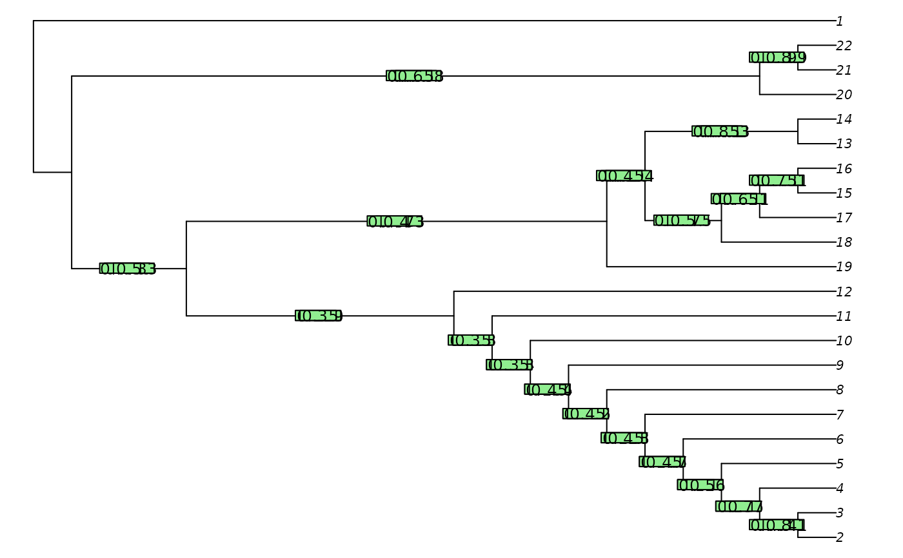
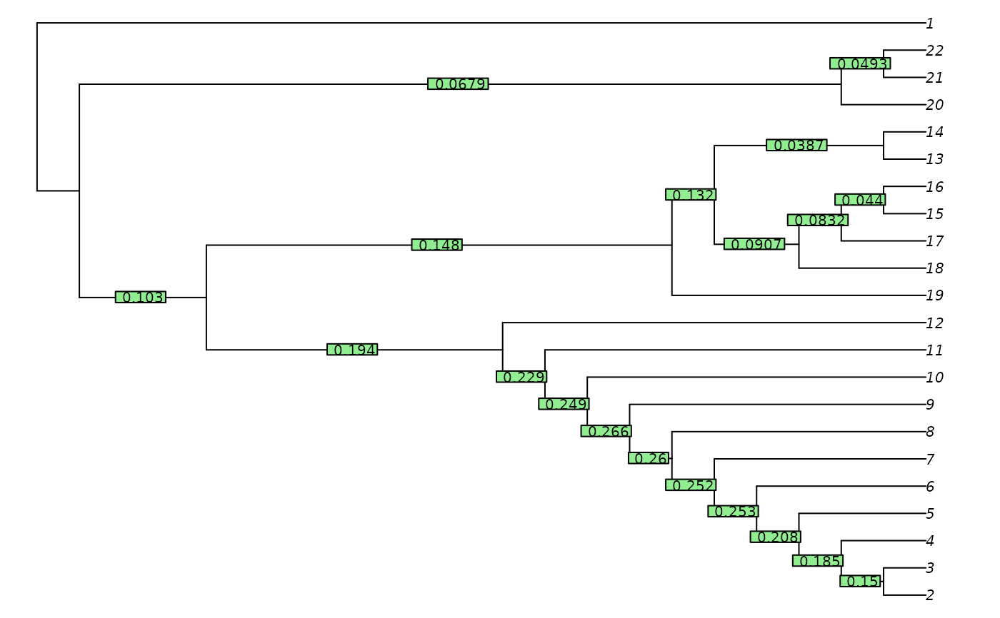

The site concordance factor (Minh et al. 2020) is a measure of the strength of support that the dataset presents for a given split in a tree.
QuartetConcordance(tree, dataset = NULL)
ClusteringConcordance(tree, dataset)
PhylogeneticConcordance(tree, dataset)
MutualClusteringConcordance(tree, dataset)
SharedPhylogeneticConcordance(tree, dataset)A tree of class phylo.
A phylogenetic data matrix of phangorn class
phyDat, whose names correspond to the labels of any accompanying tree.
QuartetConcordance() is the proportion of quartets (sets of four leaves)
that are decisive for a split which are also concordant with it.
For example, a quartet with the characters 0 0 0 1 is not decisive, as
all relationships between those leaves are equally parsimonious.
But a quartet with characters 0 0 1 1 is decisive, and is concordant
with any tree that groups the first two leaves together to the exclusion
of the second.
NOTE: These functions are under development, and may be incompletely tested or change without notice. Complete documentation and discussion will follow soon.
Minh BQ, Hahn MW, Lanfear R (2020). “New methods to calculate concordance factors for phylogenomic datasets.” Molecular Biology and Evolution, 37(9), 2727--2733. doi:10.1093/molbev/msaa106 .
Other split support functions:
JackLabels(),
Jackknife(),
MaximizeParsimony()
data('congreveLamsdellMatrices', package = 'TreeSearch')
dataset <- congreveLamsdellMatrices[[1]][, 1:20]
tree <- referenceTree
qc <- QuartetConcordance(tree, dataset)
cc <- ClusteringConcordance(tree, dataset)
pc <- PhylogeneticConcordance(tree, dataset)
spc <- SharedPhylogeneticConcordance(tree, dataset)
mcc <- MutualClusteringConcordance(tree, dataset)
oPar <- par(mar = rep(0, 4), cex = 0.8)
plot(tree)
TreeTools::LabelSplits(tree, signif(qc, 3))
TreeTools::LabelSplits(tree, signif(cc, 3))
TreeTools::LabelSplits(tree, signif(pc, 3))

par(oPar)
pairs(cbind(qc, cc, pc, spc, mcc))
